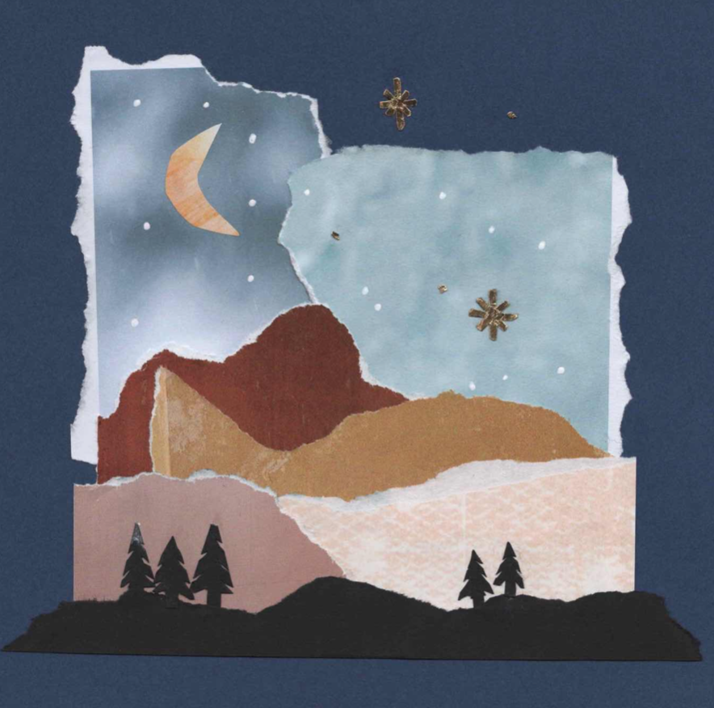

Mira Kaiser is a 3rd year undergraduate Communication student at the University of California Santa Barbara pursuing a minor in Media Arts and Design. An avid tinkerer she thrives on seeing her ideas in praxis. She has spent her summer honing skills in prototyping and generative design, using tools such as Fusion360 and Blender. She finds much of her inspiration from landscapes and elements in nature often working with softer color palettes. Her interests lie in the realm of graphic design, marketing, and UX/UI design, spending her free time scrapbooking, collaging, and crocheting. Currently, Mira is expanding her knowledge of coding and learning more about website creation.
